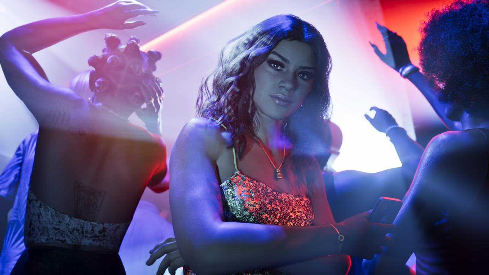

Сводка дня: 24 сентября 2026
Обновлено:

- До релиза GTA 6 — 56 дней.
- Rockstar анонсировала альбом саундтрека: 34 оригинальных трека.
- Актёр Стивен Рут сам подтвердил, что озвучивает Брайана Хедера.
- Предзагрузка — 12 ноября.
Главное за день
Сентябрь перед релизом — месяц подготовки: Rockstar раскрывает музыку и напоминает о датах, а сообщество ищет новые детали. Ниже — всё важное на сегодня.
Rockstar анонсировала «Grand Theft Auto VI: The Album»
Что случилось: 17 сентября Rockstar объявила официальный альбом игры — 34 оригинальных трека. Среди артистов — Travis Scott, PinkPantheress, Yung Lean, Morgan Wallen, Keith Richards, Rauw Alejandro и Fred again.. Шесть синглов уже вышли на стримингах. Альбом выходит на CD и виниле, лимитированный винил раскупили сразу.
Что это значит для игрока: музыка GTA 6 — это не только лицензионные хиты, но и треки, записанные специально для игры. Часть уже можно послушать.

Стивен Рут — голос Брайана Хедера
Что случилось: американский актёр Стивен Рут сам подтвердил, что участвует в GTA 6 и играет Брайана Хедера — контрабандиста из Кис. По данным игровых СМИ, после этого Rockstar напомнила актёрам о соглашении о неразглашении.
Что это значит для игрока: это первый актёр GTA 6, чьё участие подтверждено публично. Кто озвучивает Джейсона и Лусию, официально не раскрыто. О Брайане — Второстепенные персонажи GTA 6.

Что ждём дальше
- 12 ноября — предзагрузка и коробочные издания. Издания и цены GTA 6: Standard и Ultimate
- 19 ноября — релиз GTA 6. Дата выхода GTA 6: 19 ноября 2026
- Отсчёт в вашем часовом поясе — Отсчёт до GTA 6 в вашем часовом поясе
Источники: Rockstar Games; TechRadar (альбом); GameRant, Yahoo, VGTimes (Стивен Рут).